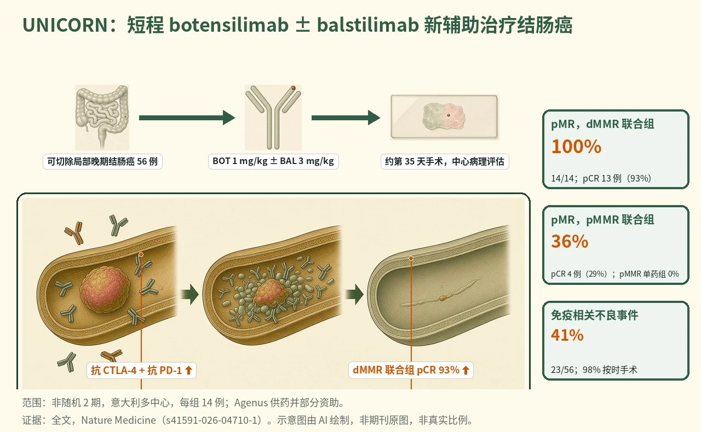

新辅助botensilimab联合balstilimab治疗结肠癌：dMMR联合组MPR 14/14
UNICORN是一项非随机2期窗口期研究，纳入56例可切除的局部晚期pMMR或dMMR结肠癌患者。短程术前Fc增强型抗CTLA-4抗体botensilimab单药或联合抗PD-1抗体balstilimab进行评估，dMMR联合组主要病理缓解率达100%。

- 56例局部晚期结肠癌入组
- 4个顺序分配队列各14例
- 术前botensilimab±balstilimab
- dMMR联合组MPR 100%（14/14）
示意图展示了Fc增强型抗CTLA-4抗体botensilimab的作用机制，以及与抗PD-1联合用药的协同策略。
研究背景与待解问题
结肠癌的微卫星状态对免疫治疗反应有重要影响：dMMR/MSI-H患者对PD-1抑制剂反应良好，而pMMR/MSS患者通常对免疫治疗不敏感。Fc增强型抗CTLA-4抗体botensilimab旨在增强效应T细胞活化和Treg耗竭。
本研究要回答的问题是：Fc增强型抗CTLA-4能否在pMMR结肠癌中打开免疫治疗窗口？联合方案在dMMR中能否达到更深的病理缓解？
研究设计
UNICORN是一项开放标签、非随机的2期窗口期研究。56例可切除的局部晚期结肠癌患者按MMR状态和治疗方案分为4个顺序分配队列：
- pMMR + botensilimab单药
- pMMR + botensilimab联合balstilimab
- dMMR + botensilimab单药
- dMMR + botensilimab联合balstilimab
术前短程给药后行手术切除，主要终点为主要病理缓解率（MPR）。
核心结果
疗效（按MMR状态和治疗方案）
| 队列 | MPR |
|------|-----|
| pMMR单药 | 0% (0/14) |
| pMMR联合 | 36% (5/14) |
| dMMR单药 | 36% (5/14) |
| dMMR联合 | 100% (14/14) |
dMMR联合队列全部14例患者达到主要病理缓解，其中13例（93%）达病理完全缓解（pCR）。pMMR单药队列无一例达MPR，但联合用药后有36%（5/14）达MPR，pCR 4/14（29%），提示Fc增强型CTLA-4抗体联合PD-1可能在部分pMMR患者中有活性。
生物标志物
ctDNA清除与病理缓解相关，可作为早期疗效预测指标。
安全性
- 免疫相关不良事件：BOT单药8/28（29%）、联合15/28（54%），以流感样症状和腹泻为主；无不良事件致死
- 联合治疗组免疫相关不良事件发生率明显升高
机制解读
论文所证实的： Fc增强型抗CTLA-4抗体botensilimab联合PD-1抑制剂在dMMR结肠癌中诱导极高的病理缓解率；在传统认为免疫治疗不敏感的pMMR患者中，联合方案也显示出初步活性（36% MPR）。
需要进一步验证的： pMMR联合组的36% MPR能否转化为生存获益；联合方案的毒性是否可接受；需要更大规模随机试验确认。
局限与不确定
- 每队列仅14例的小样本顺序分配设计，无随机化，存在选择偏倚；各队列随访时长不同。
- 联合治疗组免疫相关不良事件发生率较高（15/28，54%），需关注安全性。
- pMMR单药队列无主要病理缓解，提示疗效高度依赖MMR状态和联合用药。
- 顺序分配设计无法平衡时期效应，亦无法与PD-1单药直接比较。
临床/产业意义
该研究为Fc增强型CTLA-4抗体在结肠癌围手术期应用提供了早期数据。dMMR联合组100%的MPR率引人注目，但需要在更大样本中验证。对pMMR患者，该策略能否真正打开免疫治疗窗口，仍需后续试验确认。